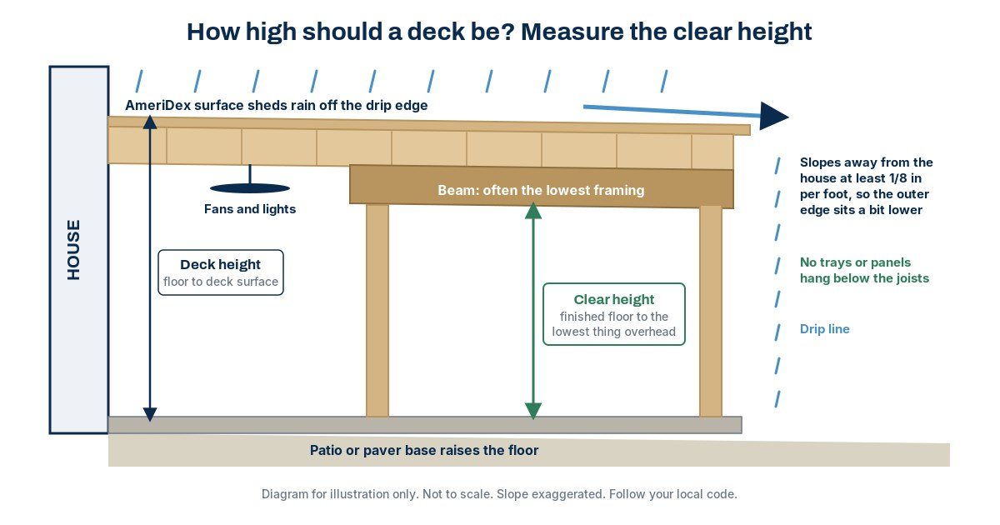

A lot of people plan a deck by its height off the ground, then find out the space underneath is lower than they pictured. A beam drops below the joists, a patio raises the floor, a fan hangs down, and suddenly the room you planned feels tight.
The fix is simple: decide how you will use the space first, then work backward to the deck height.
There is no single right height. Measure the clear height from the finished floor below to the lowest thing overhead, usually a beam, light, or fan. Size that clear height for your tallest use, then let your builder set the deck height, framing, and stairs to match your local code.
Deck height vs clear height
Deck height
The distance from the ground to the top of the deck boards. It sets your stairs, railings, and how the deck lines up with the door to the house.
Clear height
The open space you can actually use below: from the finished floor (patio, pavers, or gravel) up to the lowest beam, joist, light, or fan.
Five things that eat headroom
Beams and girders
Beams usually hang below the joists and are often the lowest framing. Where they run and how deep they are can matter more than the deck height itself.
Joist depth
Longer spans can call for deeper joists. Your builder sizes the framing for the span and load, and that depth comes out of the space below.
A new floor below
A concrete patio or pavers sit on a base that raises the finished floor. Plan for it if you are adding a patio under the deck.
Fans, lights, and a ceiling finish
Ceiling fans and pendant lights hang down. A finished ceiling under the joists also takes some height. See under deck lighting ideas.
The drainage slope
A deck that sheds water slopes away from the house, at least 1/8 inch per foot. On a 12 foot deep deck that is at least 1 1/2 inches lower at the outer edge.
With AmeriDex, the deck boards and the Dexerdry seal shed water at the surface. Nothing hangs below the joists to catch water, so a drainage layer does not take any of your clear height. See how the system works.
Plan the height around how you will use the space
Start from the tallest thing that will be under the deck, then add room for fans, lights, and comfort. Your builder turns that into a deck height.
| Planned use | What to measure first |
|---|---|
| Patio seating | Your tallest family member standing, plus any fan or light hanging down |
| Screened porch | Screen door and panel heights from the screen system you pick |
| Storage | Your tallest shelving, plus room to lift items on and off the top shelf |
| Carport | Your tallest vehicle, including roof racks or cargo boxes |
| Hot tub | The tub maker's overhead clearance, with the cover open |
| Outdoor kitchen | Each appliance maker's overhead and side clearances, plus your local fire code |
| Play area | The play set maker's height and clearance guidance |
Checklist: set the height before you build
Pick the main use for the space below
Seating, storage, parking, a hot tub, or a mix. The tallest use sets the target.
Measure the tallest thing going under it
A person, a shelf unit, a vehicle, or a product maker's listed clearance. Write the number down.
Decide on the floor below
Patio, pavers, or gravel. Ask how much the base and surface will raise the finished floor.
Plan fans, lights, and any ceiling
Choose fixtures early so their drop is part of the plan, not a surprise.
Ask where the beams will run
Beam layout and post spacing shape both the headroom and the open floor area. Your builder can often adjust the layout to keep a key area clear.
Account for the slope
The deck drops at least 1/8 inch per foot away from the house, so check the clear height at the outer edge too.
Confirm with your builder and local code
Deck height affects stairs, railings, and permits. Your builder and your building department have the final word.
Do
- Plan the use below before you set the deck height
- Measure clear height to the lowest beam or fixture
- Include the patio or paver base in the math
- Check the height at the outer, lower edge
- Decide on a dry space below before the boards go down
Don't
- Plan by deck height alone
- Forget fans and lights that hang down
- Add a patio later without checking headroom
- Assume beams can move after framing is up
- Guess at code items like stairs and railings
Height is only half of it: keep the space dry
A tall space under a regular gapped deck still gets wet every time it rains. If you plan to use the space, plan for it to stay dry. On an AmeriDex deck the boards lock onto the Dexerdry seal, the surface sheds rain off the drip edge, and the area below stays a dry space. Read more about dry space decking and under deck living space ideas.
AmeriDex goes in during new construction or a full re-deck, which is the same time you set the deck height. AmeriDex boards and accessories carry a 25-year limited residential warranty and a 10-year limited commercial warranty under the AmeriDex Limited Warranty from A&M Building Products LLC.
Frequently asked questions
How high does a deck need to be to walk under it?
It depends on who will use the space and what hangs below the deck. Measure from the finished floor to the lowest beam, light, or fan, and make sure the tallest person using the space can stand and move comfortably under it. Your builder sets the final deck height to fit that clear height and your local code.
Does AmeriDex reduce the headroom under my deck?
No. AmeriDex sheds water at the deck surface with the boards and the Dexerdry seal. Nothing hangs below the joists to catch water, so the clear height is set by your framing and anything you choose to add below.
Does the drainage slope change the height under the deck?
A little. An AmeriDex deck slopes away from the house at least 1/8 inch per foot, so the outer edge sits slightly lower than the house side. On a 12 foot deep deck that is at least 1 1/2 inches. Check your clear height at the lower edge.
Can I get more headroom under my existing deck?
Raising an existing deck means reworking the framing, posts, and stairs, which is a job for a deck builder and usually needs a permit. If you are replacing the deck anyway, that is the time to set the height for the space you want below.
Do I need a permit to change my deck height?
Rules vary by town. Many places require a permit for a new deck or for structural changes, and deck height can affect stair and railing requirements. Check with your local building department before you build.
Planning a deck with usable space below?
Start a free quote with your deck size and how you want to use the space below. Request free samples to see the boards and the seal up close. Always follow your local code.